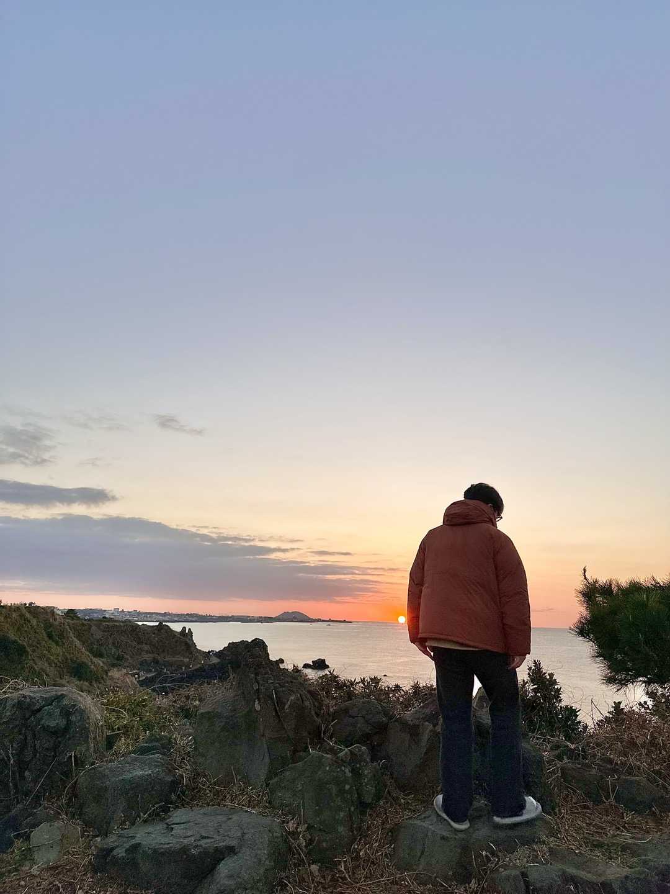

먼저 저를 간단히 소개할게요 🤍
저는 한국공학대학교에서 컴퓨터공학과를 전공했습니다.
나이는 만 22세이고, 현재 사는 곳은 경기도 김포시 입니다.
저는 사람을 만나는 것, 여행을 떠나는 것, 술마시는 것을 좋아합니다.
다음으로 목표를 간단히 설명할게요 🤍
졸업을 앞두고 진로에 대한 고민이 많던 와중에
우연히 자바 풀스택 교육과정을 알게되어 참여했습니다.
이번 과정을 통해 프론트엔드 백엔드에 구애 받지 않고
개발이 가능한 웹 개발자가 되는 것이 목표입니다 :)
다른 내용이 궁금하시다면
상단 바에서 다른 메뉴를 선택해주세요!